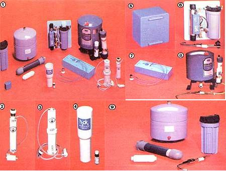

Your drinking supply-whether it comes from the city or your own well-may contain chemicals which make it unfit for human consumption, unless you . . .
In MOTHER NOS. 61 and 62, we reviewed two different approaches to water treatment (distillation and filtration), both of which are capable of removing dissolved solids and volatile chemicals from your drinking supply. This article will conclude our series on water processors, with a look into units that treat the liquid using a variety of methods: reverse osmosis, magnetism, ultraviolet light, and a unique disinfectant/filtration combination.
Although all of the devices shown here-with the exception of the Bon Aqua-do qualify as biological purifiers, their tech nical approaches have little in common . . . so let's examine each type.
REVERSE OSMOSIS
RO, as it's called among experts, is a relatively new water treatment technique that was developed, by the Department of the Interior's Office of Saline Water, to remove salt from water. It's easy to understand, then, that reverse osmosis is the only treatment that we've reviewed which is capable of removing salts from fluids with real reliability (even the "stills" require frequent cleaning under such use).
The method of purification in an RO unit is something like the biological process of osmosis, whereby plants take in water from the ground through their cell walls. However, in reverse osmosis, water is forced against a cellulose acetate membrane by the pressure in the home's plumbing lines. (Incidentally, at least 30 pounds per square inch of water pressure is required for RO to work.) The H 2 O sheds any dissolved and suspended solids and contaminants when pressed against the membrane, and proceeds-cleansed-through the barrier, molecule by molecule. Meanwhile, a secondary continual flow (against the surface of the membrane) flushes away the undesirable material in a waste water stream.
Though reverse osmosis actually does remove the biological contaminants that make water un potable, the units are seldom used as purifiers . . . since bacteria tend to collect on the membranes and eventually block the flow. Consequently, many RO manufacturers recommend that their devices not be used on other than chlorinated water supplies . . . or, alternatively, that the membrane be cleansed periodically.
In addition, heavy concentrations of dissolved solids tend to overwhelm the capability of the units to cleanse themselves. The two larger RO systems discussed here-made by Culligan and Technic-both employ prefilters to combat this problem, and all the manufacturers recommend that the units not be used if more than 1,000 parts per million of dissolved solids are present in the feed water. (In fact, the total dissolved solids-or TDS-within that limit will significantly affect the performance of the water processors.)
RO membranes also have a limited tolerance to extremes of temperature or pH. The sensitive "skins" will be damaged by temperatures on either side of a 35-80°F range, or at a pH below 3.0 or above 8.3.
When you're judging an RO unit's performance, it's important to note both the pressure and temperature at which the equipment has been tested. As the pressure rises, water output and quality increase . . . up to the capacity of the system (usually about 100-125 PSI). However, as the temperature of the input water drops, an odd thing happens: The rate of flow decreases, but the quality of the H20 stays the same or improves.
Despite all the limitations inherent in the application of reverse osmosis, the method is widely considered to be one of the most effective water-cleansing techniques available. RO membranes reject 80-100% of a large number of contaminants, and are impossible to operate improperly (as opposed to some distillers and filters which can actually worsen water quality if used incorrectly). And, in most installations, the RO membranes can be expected to last approximately three years.
AQUA-MITE
This Scottsdale, Arizona company's device incorporates a big five-square-foot membrane-a size normally found in larger, more expensive units-in a small package that rests on a counter top . . . and is equipped with a snap-on faucet attachment. Consequently, although the Aqua-Mite lacks the prefiltering or storage capabilities of the more expensive systems, it does have a similar output capacity. (However, like all the RO equipment, the Aqua-Mite does come equipped with an activated charcoal filter to remove undesirable odors.)
We found it difficult to become enthusiastic about Aqua-Mite's plastic shell (which is ill-fitting), but the unit is relatively compact and offers a convenient bypass valve-to be used when you need a quick shot of "raw" water-on its faucet attachment.
CULLIGAN AQUA-CLEER H-5
Because of Culligan's well-known and immense dealer network, the firm's reverse osmosis equipment is available almost everywhere . . . as is the installation service which the company recommends for its five-component system.
The water enters through a prefilter-which is capable of screening particles down to five microns-before it ever reaches the RO membrane. And once the main cleaning job is done, the liquid passes through a full-sized activated carbon filter before being delivered to the pressurized storage container . . . then, when the owner wants to dispense some pure water, he or she need only push the lever on the spigot.
All of the components (with the exception of the faucet) are stowed under the sink, and the only evidence that a water treatment system is in use is the tap located on the counter. Each piece is well-constructed, and-because the device's membrane is protected by a filter-the Culligan unit should perform well for a number of years.
(You might also be interested to know that Culligan offers a free water analysis service to its customers, and that its Aqua-Cleer H-5 system can-in some areas -be rented on a monthly basis.)
KIRSCHMANN RO-20 AND RO-40
Home Pure Water-which also manufactures distillers-offers two reverse osmosis devices of differing capacity. The smaller of the two, the RO-20, attaches directly to a faucet . . . and its waste water drains from a hole in the bottom of the unit. Clean water comes out a tube connected near the top, and is then filtered through an activated carbon capsule attached to the tube's end. The RO 20's output is relatively modest, but the device is the most compact of the RO units we've investigated.
Kirschmann's RO-40 is large enough to be plumbed into a cold water line, but can also be hooked directly to a faucet by using a special adapter. In either case, the waste water exits from a tube near the bottom of the unit and drains into the sink that's served by the device. The pure water outlet is similar to that of the RO-20 . . . with the same kind of charcoal filter attached to the output tube.
Both the RO-20 and the RO-40 are solidly constructed of plastic, and include detailed instruction manuals and parts lists. However, the most obvious plus feature of the Kirschmann units is their low price.
TECHNIC KLEANWATER ONE
The home-use reverse osmosis equipment manufactured by Technic is a recent aspect of the company's business. The firm got its start in the field by building larger RO equipment for hospitals and industry . . . devices with capacities of as much as 3,200 gallons per day. And, like Culligan, Technic has taken a thorough approach to the system, with each unit incorporating a prefilter, an RO membrane, an activated carbon filter, a pressurized storage tank, and a faucet.
All of the Kleanwater One's components are mounted on a metal stand, and most of the plumbing is connected before shipment. A thorough instruction manual is included, along with an inspection report covering the results of the factory testing of each device. In fact, the test report on our unit indicated that-at 50 PSI and 63°F-the Kleanwater One was actually yielding almost 13 gallons of clean water per day.
MAGNETISM
It's important that you understand the limitations of magnetism as a water cleansing technique. While the application of a sufficiently strong magnetic field to a water line has been reported to reduce or prevent scaling in boilers, such "treatment" neither purifies water biologically nor significantly reduces the volatile chemicals present in the liquid.
The theories about how magnetism actually affects water are numerous and largely inconclusive . . . but the positive effects have been identified in a number of different applications. Basically, the presence of the magnetic field appears to encourage "clumping" of particulate matter in the liquid, causing it to fall out of suspension. Some of the claims that have been made for magnetic treatment are the limitation of incrustation, easier heating of water, and increased oxygen content in the liquid.
ULTRAVIOLET LIGHT
As some of you may know, concentrated ultraviolet light has been used-for quite a few years-for the sterilization of medical and food processing equipment. The short wavelength radiation has a deadly germicidal effect without posing, when properly shielded, serious problems for humans. (UV is the radiation that causes suntan . . . or sunburn, for the indiscriminate.)
CLEAN WATER SYSTEMS CWS-2
While ultraviolet light has been in use by industry for some time, Clean Water's unit is the first home application of the technique that we're aware of. And, for individuals who are faced with a well-water biological potability problem, the CWS-2 provides one of the best treatment approaches you can find. The Clean Water's UV tube can purify up to 30 gallons of water per hour on demand, and will consume only 24 watts of power while doing the job. Plus, because the unit won't deliver water unless the UV tube is working, its operation is effectively fail-safe.
Of course, the germicidal ultraviolet light will have no effect on the suspended particles or dissolved volatile contaminants that may be in your water. Hence the CWS-2 is equipped with a full-sized activated carbon filter (similar to those used in the large American Pure Water and Sears items discussed in MOTHER NO. 62) to ensure that your water is properly screened for sodium, nitrates, trihalomethanes, etc.
THE UNIQUE H 2 OK
The Better Living Laboratories water purifier is a hybrid . . . a combination of two approaches to water treatment. The device itself is actually an activated carbon filter (with infused silver bacterial protection) that is designed to screen a pint of water at a time.
However, the purification capabilities of the H 2 OK come in the form of a disinfectant that the company supplies along with the filter. Bacterial potability is assured by the addition of a few drops of the germicidal fluid to the water before processing. Then-as the liquid passes the charcoal-the disinfectant is filtered out . . . providing pure and clean water.
Perhaps the most significant feature of the H 2 OK is its portability. It can easily be carried by backpackers or international travelers, and will add a mere 14 ounces to the load they're carrying.
LOOKING BACK
Over the course of the last three issues, we've reviewed a wide range of water treatment techniques. If you're considering purchasing a system for your household, perhaps the major decision you have to make is which approach best suits your needs . . . and finances.
The first article (in MOTHER NO. 61, page 162) covered distillers manufactured by Crystal Clear, New World, and Pure Water, and discussed the capabilities of those units to remove all contaminants-including volatile gases-from severely polluted water supplies. We identified the distillation process as potentially the most effective method for providing pure H 2 O.
However, we also mentioned the possibility that-when such devices are incorrectly operated-distillers can actually concentrate the very pollutants that their owners want to remove. In addition, all three of the distillers require an exterior source of power to do their jobs. Their prices-which are roughly in proportion to their capacities-vary between $100 and $575.
Then (see page 160 of MOTHER NO. 62) we examined seven different filtration systems. Again, the capacities of the devices vary widely, and-with the exception of the Seagull models produced by General Ecology-the filters aren't capable of rendering unpotable water safe for drinking. Activated carbon filtration is effective in removing dissolved solids and volatile chemicals from potable water, as long as a unit's rated flow is not exceeded. The useful life of a filter, however, is directly proportional to the severity of the water-supply problem.
Activated carbon" screens" have a definite value as a cleansing method for city water or "hard" well water. The devices are generally less expensive than distillers-varying between $20 and $195 (the latter price is for General Ecology's larger purifier)-and they're easy to install and operate. Furthermore, the filters require no external source of power.
Finally, in the preceding pages, we've looked into several different approaches to water quality improvement. Reverse osmosis is a comparatively sophisticated method of treatment that is quite effective . . . with prices falling roughly between filtration and distillation.
Both magnetism and the two-part system used by the H 2 OK have limited-but interesting-possibilities. Neither technique would be suitable for complete treatment of a household drinking supply. And there is also the ultraviolet light system of purification, which for those folks whose water supply has bacterial problems-may be the single most effective and practical way to get a large volume of safe drinking water.
As the people of this country become more aware of the dangers often found in both public and private water systems, more and more companies will manufacture equipment to deal with such hazards. Recently the Environmental Protection Agency has set standards for municipal water quality, and has begun to examine point-of-use systems like the ones we've reviewed. Perhaps we're on the verge of recognizing that a very small part of the water most people consume actually goes for drinking and cooking, and that the most effective and economical way to purify public water may be in the home . . . using household water treatment devices.
|
 [1] The various mater treatment devices reviewed in this issue are of widely different size, approach, and scope. Here are: [2] Kirschmann's RO-20 . . . [3] Kirschmann's RO-40 . . . [4] the H20K . . . . . [6] the Clean Water Systems C WS-2 ultraviolet purifier... [7] the Aqua-Mite . . . [8]Technic Central System's Kleanwater One . . . and [9] Culligan's Aqua-Cleer H-5. |
|
|